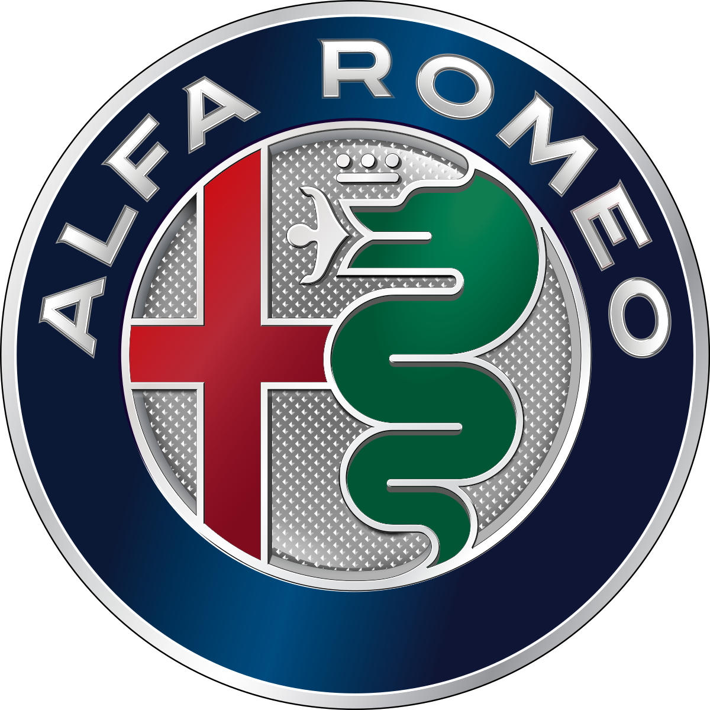
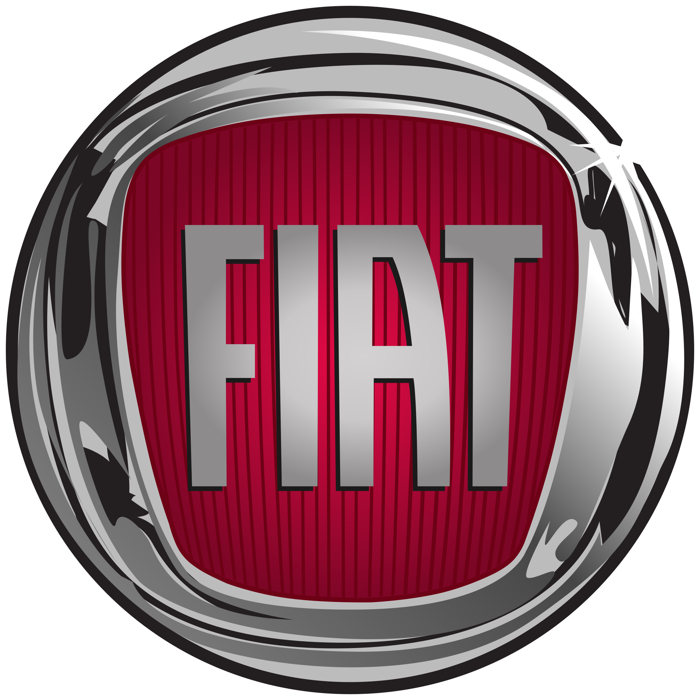
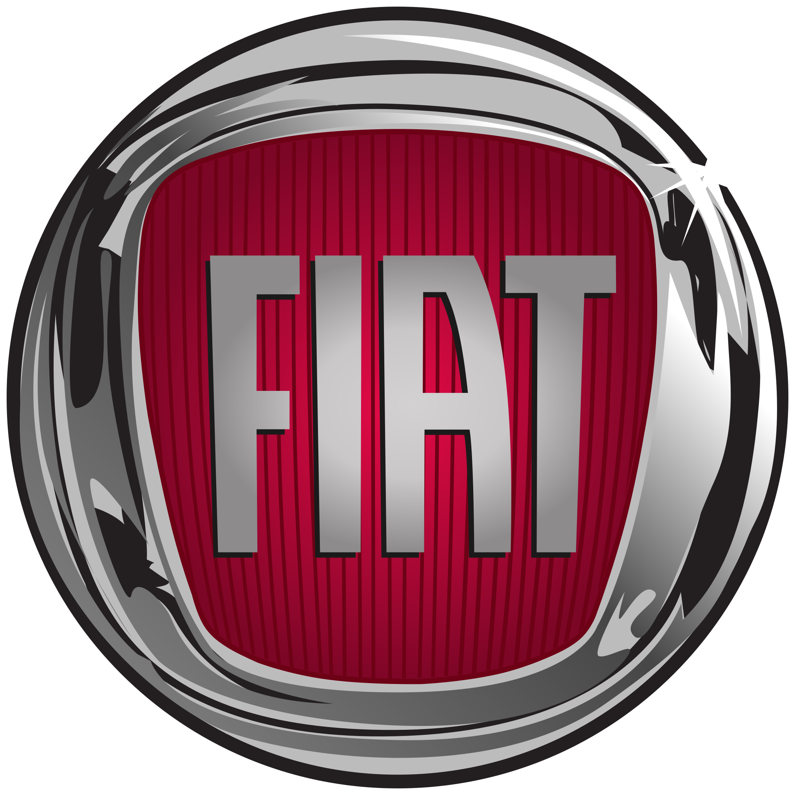

Home
Chi siamo?
Billy's Car – Passione su Quattro Ruote.
La Billy's Car si fonda sull’impegno e la passione di Tiziano Guercio, Andrea Faraulo, Gabriele Capece e Lorenzo Russo, che in qualità di titolari
guidano con visione strategica e dedizione ogni ambito dell’attività.
Ognuno di loro ha un compito preciso, che garantisce l’operatività quotidiana e l’eccellenza del servizio:
Direttore Vendite – Tiziano Guercio Tiziano coordina la rete commerciale, supporta i clienti nella scelta del veicolo, cura le trattative e assicura che ogni vendita sia condotta con trasparenza e soddisfazione.
Direttore Tecnico / Officina – Andrea Faraulo Andrea sovrintende l’officina, la manutenzione e le revisioni, controllando che ogni veicolo esca da noi con prestazioni al top e sicurezza garantita.
Direttore Amministrativo / Finanziario – Gabriele Capece Gabriele è responsabile dei processi contabili, delle pratiche finanziarie, della gestione dei fornitori e del controllo di bilancio, per un’azienda sana e trasparente.
Direttore Marketing / Customer Experience – Lorenzo Russo Lorenzo cura la comunicazione, le strategie promozionali, la relazione con i clienti e la qualità dell’esperienza. È lui che assicura che ogni visita presso la concessionaria lasci un’impressione positiva e duratura.
I nostri marchi
 
